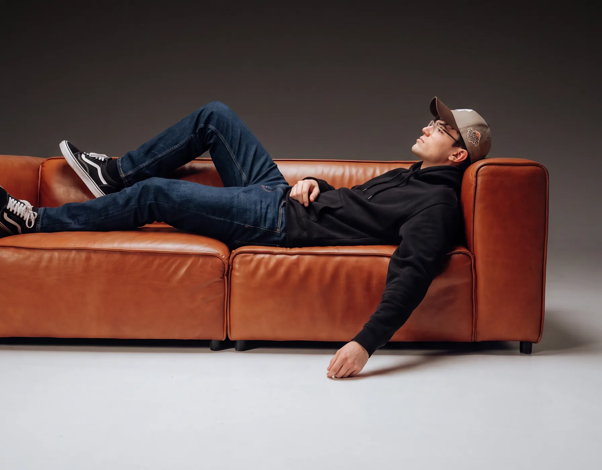

Facundo
Soy Facundo, diseñador en Comunicación Visual y creador de qfadesign.
Trabajo junto a marcas y proyectos para transformar ideas en soluciones visuales con intención. Me interesa entender qué hay detrás de cada proyecto, explorar conceptos y referencias, y encontrar una forma de comunicarlo que tenga sentido para la marca y para las personas.
Para mí, diseñar no es solo hacer que algo se vea bien. Es tomar decisiones, construir una identidad y comunicar una idea de forma clara.
- Observador
- Creativo
- Estratégico
- Detallista
Qué hago
Branding
Definir la esencia de una marca es clave. Trabajo en construir identidades completas que sean coherentes, impactantes y memorables, desde su visión hasta su personalidad visual.
Motion Graphics
Técnica de animación que combina elementos gráficos en movimiento, como texto, ilustraciones, formas y efectos visuales, para comunicar ideas de manera dinámica y atractiva.
Social Media
Diseño contenidos atractivos y coherentes para plataformas digitales, asegurando que cada publicación transmita el mensaje correcto de manera impactante y creativa.
Diseño de Logos
Un logo cuenta historias. Cada diseño está pensado para ser único, representativo y adaptable, creando una conexión inmediata con el público.
Páginas web
Diseño y armo sitios web a medida: claros, rápidos y pensados para verse bien en cualquier pantalla, para que tu marca también funcione online.
Y más ...
Packaging, afiches, posters, publicidades, edición de fotografía …
Aplicaciones que uso
Avanzado
- Adobe Illustrator
- Adobe Photoshop
- Adobe After Effects
- Figma
Intermedio
- Adobe InDesign
- Adobe Premiere Pro

Me gusta transformar ideas en imágenes, marcas y piezas que comuniquen de verdad.